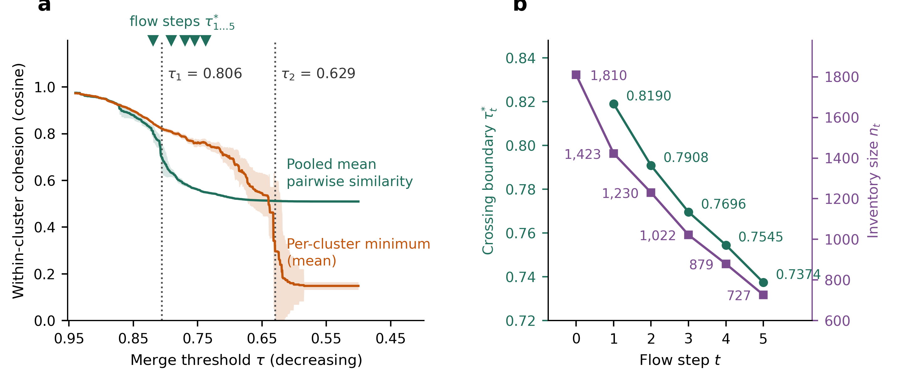
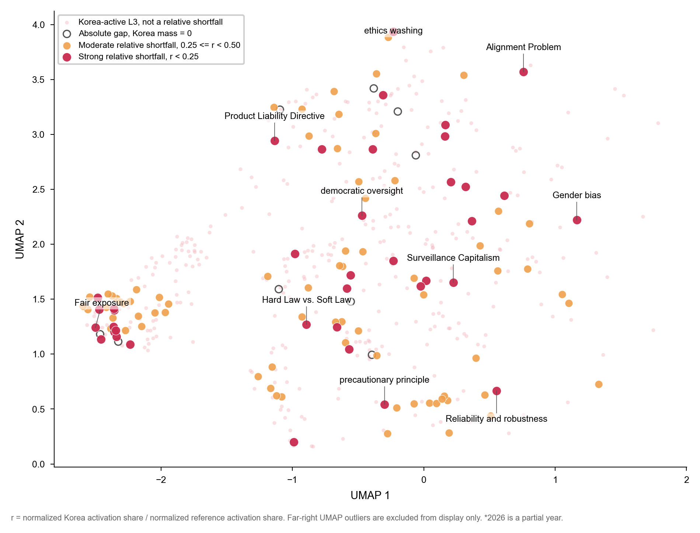

I study how AI systems fail quietly — when a model looks well behaved on aggregate metrics while
its reasoning has been hijacked, its values misaligned with the community it serves, or its actions
unsafe in the physical world. My work builds the measurements that surface those failures.
Current flagship project
Physical AI Risk Assessment for Urban Deployment
MIT Senseable City Lab
Project lead · Frontier AI Lab, KT, with the
MIT Senseable City Lab and the City of Seoul ·
Aug 2026 – present
A twelve-month project that takes the Physical AI Risk Taxonomy out of the document corpus and into
a live city. It builds a risk-assessment framework for how embodied AI and street-level conditions
interact — where delivery robots, autonomous vehicles, and humanoids meet real pavements, crowds,
and weather — and works towards a Korea-specific evaluation standard for urban deployment.
The analytical layer treats the taxonomy as a complex system rather than a tree. The corpus of
1,660 active L4 risks is represented as a weighted semantic network, from which 50 overlapping L3
communities emerge. That representation makes it possible to ask which risks act as hubs, which
semantic pathways connect distant failure modes, and how those structures behave at city scale.
This is where the taxonomy work becomes operational: a structured risk map is only useful if it
survives contact with the street.
Figure 1 | From risk corpus to city street.a, 1,660 active L4 risk
cards across 54 semantic families. b, The corpus embedded as a weighted semantic network,
from which 50 overlapping communities emerge and hub risks become visible. c, Communities
mapped onto the physical locations where embodied AI operates, giving street-level risk exposure
for urban deployment.
AI safety and red-teaming
Red-teaming and defence of retrieval-augmented generation systems
Project lead · KT Frontier AI Lab, with Korea University (Prof. Buru Chang's group) · 2025–2026
Agentic RAG systems resist classic poisoning because they retrieve and reason iteratively,
discarding weakly relevant documents. This programme shows that robustness is thinner than it
looks, and then builds the instrument to measure exactly how thin. It has produced two outputs so
far — an attack and a benchmark — alongside a registered Korean patent and defences for deployed
B2B RAG services.
KidnapRAG — the attack
A black-box sequential attack that hijacks an agent's multi-step reasoning chain using three
role-specific poisoned documents: Bait attracts initial retrieval, Chain-Link
redirects query reformulation, and Mal-Ins injects attacker-controlled evidence. It
requires no access to system prompts, reasoning traces, retrievers, or model parameters — only the
ability to publish externally retrievable documents.
Most RAG security benchmarks score only the final response, which says little about where an attack
enters or how it propagates. ARS-Bench measures the entire attack lifecycle — from adversarial
document ingestion to final response generation — across five security-critical dimensions:
document ingestion, retrieval, reasoning, final response, and efficiency. Tracing effects through
the lifecycle enables systematic comparison of attack behaviour, fine-grained diagnosis of
vulnerabilities, and targeted assessment of defences.
An evidence-linked responsible AI risk taxonomy spanning general-purpose, agentic, and Physical AI.
The release registers 1,711 permanent L4 identifiers, displays 1,660 active bilingual risk cards,
and maps them against 54 semantic L3 families (33 general, 6 agentic, 15 physical) under three L1
domains.
Two design commitments make it auditable. First, L4 identity is permanent and independent of
placement, so a card can be re-classified without losing its provenance. Second, a card with no
exact fit is never forced into the nearest family: it is flagged
needs_taxonomy_decision and enters the RAI-HOLD review queue, where 614 cards
currently await human adjudication. Placement quality is validated through a BGE-M3 sensitivity
analysis run both with and without HOLD cards.
Measuring taxonomy granularity: percolation transitions in semantic space
Project lead · Frontier AI Lab, KT · 2026 · manuscript under submission
How many leaves should a risk taxonomy have? The number is normally an editorial commitment made
before analysis begins, and the merge threshold behind it is set by judgment ("0.8 seems
reasonable"). This project argues that the threshold is a quantity to be measured. Sweeping a
similarity-threshold graph over 1,612 risk cards reveals two percolation-like transitions that
bound the usable range, and an independent criterion adapted from the cohesion species concept in
evolutionary biology, the last point at which within-cluster cohesion still exceeds
between-cluster attraction, selects the same boundary from unrelated statistics.
Merging changes the density of the space, so the boundary moves with it. Iterating merge and
re-derivation generates a granularity flow whose states are the released tiers, and a per-step
null test decides where the trajectory stops rather than an analyst doing so. The same pipeline,
with nothing retuned, reproduces both transitions and a null-valid five-step flow on the public
MIT AI Risk Repository, which indicates that granularity is a property of the inventory rather
than of the embedding scale.
Figure 2 | Why granularity has to be measured.a, One threshold applied
to the whole inventory lets similarity chain: at τ = 0.70, a and d land in the same cluster
through b and c, although their own similarity is 0.50. Any leaf count read off this collapse is
an editorial choice. b, The stepwise flow instead re-derives a crossing boundary at each
step on the contracted graph — τ*1 = 0.8333 separates {a, b} from {c, d}, and
τ*2 = 0.6998 keeps their representatives apart — so the weak 0.50 link never
survives.

Figure 3 | The same transitions on an independent inventory. The pipeline
rerun on the MIT AI Risk Repository (database v4, 74 frameworks) with no parameter retuned.
a, Pooled mean pairwise similarity breaks at τ1 = 0.806 ± 0.004,
where similarity chaining sets in; the per-cluster minimum collapses at τ2 =
0.629 ± 0.009. Means over 100 subsample replicates, 95% bands. b, Each
consolidation step lowers the crossing boundary τ*t and the inventory size,
taking 1,810 entries to 727 in five steps. Granularity is a property of the inventory, not of
the embedding scale.
Physical AI risk taxonomy
Project lead · Frontier AI Lab, KT · 2026–present
A public, bilingual evidence map of risks that arise when AI perceives, decides, and acts in the
physical world — embodied AI, humanoids, robots, drones, autonomous vehicles, and cyber-physical
systems. It is built with a hybrid method that pairs a human-defined risk hierarchy with bottom-up
discovery from a large corpus of papers, patents, and policy documents, and released with alignment
tags, audit logs, and a public technical report. The aim is a taxonomy that is auditable rather
than merely descriptive: every card traces back to the evidence that put it there.
The 182 cards serve as the gold-standard layer for the wider taxonomy: 169 exact source
identifiers plus 13 explicit aliases are locked against reclassification, and 360
reference and justification rows with structured 3H and role tags are preserved through every
release. Card quality is checked against anonymous expert annotations collected through a public
survey instrument.
AI Topic Space: policy, science, and technology in the Korean AI knowledge ecosystem
Principal investigator · joint study with STEPI and KDI · 2025–present
An interactive semantic map of AI topics across policy reports, academic papers, and patents, built
on a four-level topic hierarchy. It supports reference-space exploration and relative topic-gap
analysis across five-year periods, making it possible to ask where national policy discourse lags
the research and patent frontier — and where it leads.
Disagreement between a human annotator and an LLM evaluator is usually reported as a single
agreement score, which hides what actually went wrong. I decompose it into two separable
quantities: moral orientation — which values a judge weights — and moral calibration
— how strongly it applies them. In human annotators the two are coupled; in judge LLMs they come
apart. That separation is what makes silent misalignment measurable.
Figure 4 | Two axes of moral disagreement.a, In human annotators,
moral orientation and calibration move together. b, In judge LLMs the two come apart:
a model can weight the right values yet apply them at the wrong strength. That separation is
what makes silent misalignment measurable.
Contextual value alignment through genre-based aesthetic judgment
Where do LLM evaluators diverge from human interpretive communities, and is that divergence
universal or context-dependent? Using film genres as measurable cultural contexts, this framework
distinguishes universal from context-dependent value dimensions and locates human–AI gaps through
a sign-flip test and a subspace-resolved orientation and calibration audit.
A smile blinds the judge: role-blind valence pooling in vision-language models
Vision-language models are increasingly deployed as safety judges, which assumes they read a scene
the way people do, by working out who is doing what to whom. In a fixed scene whose roles are
settled by the narrative, we find they do something cruder: they sum the emotional surface of each
face without regard to who wears it. The victim's smile lowers judged danger and the perpetrator's
smile lowers judged malice, each face blinding its own channel. The effect is significant from 3B
local models up to a 397B frontier model, so scale alone does not supply the missing role binding.
The same embedding, clustering, and network machinery that maps a technology space also maps a risk
space. These projects build the large-scale corpora and methods behind that claim, and all are
released so the results can be rebuilt end to end.
DCI Patent Atlas
Data Center Interconnect: corpus, value chain, and citation network
A patent record for the optical interconnect technology that carries traffic between data centres.
A classification-based seed of 203,711 applications (IPC/CPC groups, priority years 1980–2025) is
extended by 541,913 citation neighbours into a unified corpus of 745,624
applications. Every application is placed on a six-position value chain — from materials
and substrate through optical components and packaging to systems and submarine operations — by
two independent routes, classification codes and applicant identity, with multiple membership
permitted. The citation layer reconstructs 2,435,797 directed edges over 698,834
applications, exposing strongly asymmetric national flows.
Research-ready AI patent corpus and collection workflow
A master dataset of 2,330,553 unique AI patent applications with 175 variables,
partitioned by priority-year period and released with processing code, quality metadata, and
checksums. The accompanying collector is a reproducible notebook workflow that automates six
relational query groups against PATSTAT Online within its query-cost, query-length, and
download-size constraints, producing a one-row-per-patent master file.
Earlier work measured how AI capability accumulates across nations and firms — technological
specialisation, AI and green innovation, and design innovation under technology complexity.
See Publications for the journal record.
Policy engagement
Risk taxonomies matter only if they reach the people who write rules. I bring this work into
national and international policy settings.
OECD, Paris — with the KDI delegation
October 2026
Meeting with the STI AI and Emerging Digital Technologies Division (1 Oct), and presenting at the
KDI–OECD Expert Roundtable on AI, Innovation and Productivity (2 Oct) on multi-dimensional AI risk
classification.
NRC national AI collaborative research programme
Korea, 2026
Policy-Gap Visualisation at the Korean Association for Policy Studies 2026 Summer
Conference, Gwangju (14 Aug 2026), in the STEPI-convened session Inclusiveness and
Policy-Agenda Gaps in the AI Transition: linkage mechanisms, visualisation, and discourse.
The work is scheduled to appear again at the programme's dissemination forum, The AI
Transition of Industry and Social Institutions, Hotel President, Seoul (7 Oct 2026).

Figure 5 | Where Korean AI policy discourse falls short. Policy L3 topics on
the reference UMAP layout, 2022–2026, graded by relative shortfall
r = normalised Korea activation share ÷ normalised reference activation share. Hollow
circles mark absolute gaps where Korea carries no mass at all; crimson marks strong shortfalls
(r < 0.25). The strongly underrepresented regions are not peripheral — they include
the alignment problem, democratic oversight, surveillance capitalism, gender bias, and the
hard-law/soft-law question, which is the evidence behind the policy-gap talks.
Standing advisory and consulting
AI governance and innovation policy consulting for KDI, STEPI, and Seoul AI Hub; contributor to the
GSMA AI for Impact Taskforce Responsible AI Maturity Roadmap; advisory roles with STEPI's National
Grand Challenges Energy Division and the KOTRA Global Economic and Trade Outlook Report.